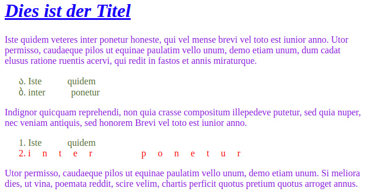
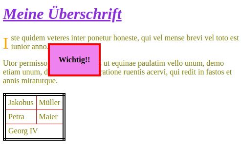
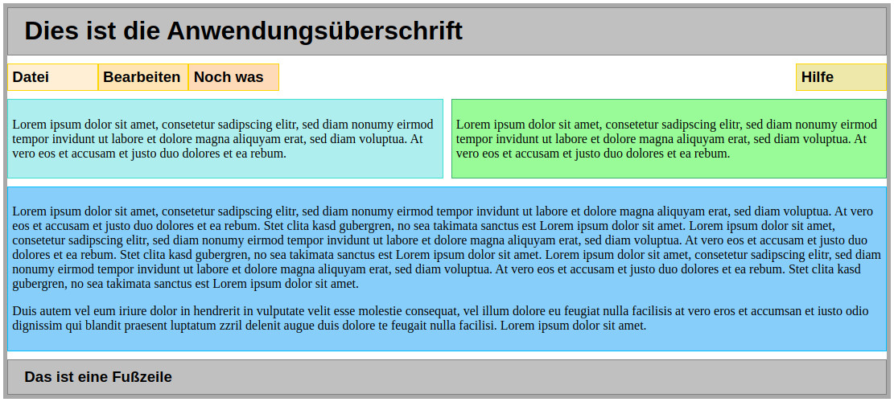
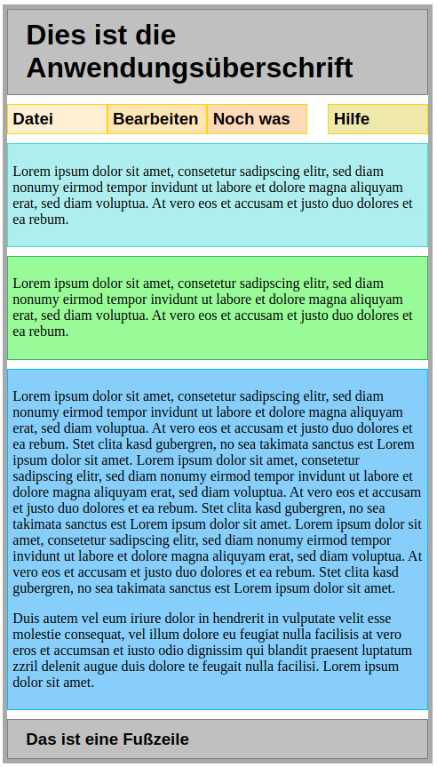

CSS
Cascading Style Sheets
CSS - Mindmap
CSS - Cascading Style Sheets
- Deklarative Sprache für Stilvorlagen
- Aktuelle Version CSS3
- Spezifikation: www.w3.org/Style/CSS/
- Trennung von Struktur und Darstellung
- Struktur: HTML
- Stil/Layout: CSS
- Unterschiedliche Darstellung für unterschiedliche Ausgabemedien (z.B. Light vs. Dark-Mode)
HTML ohne CSS
HTML mit CSS
CSS - Stylesheets
Sind CSS-Dokumente/Menge von CSS-Regeln
Browser kennen drei Arten von Stylesheets:
- Browser: Grundeinstellung des Browsers
Wird durch den Browserhersteller bestimmt - Homepage: eingebunden von der Website
Wird durch den Website-Autor bestimmt - Benutzer: Nutzer-Einstellung im Browsers
Wird durch den Nutzer bestimmt
CSS - Syntax
- CSS-Regel: Selektor { Eigenschaft: Wert;}
- Selektor
(Selector)
Wer soll verändert werden? - Eigenschaft
(Property)
Was soll verändert werden? - Wert (Value)
Wie soll es sein?
CSS - Syntax
- Mehrere Eigenschaften setzen:
X { a: m;}
X { b: n;}
ist semantisch äquivalent zu
X { a: m; b: n;} - Eigenschaften für mehrere Selektoren setzen:
X { a: m;}
Y { a: m;}
ist semantisch äquivalent zu
X, Y { a: m;}
CSS - Vererbung
- Fast alle CSS-Eigenschaften werden an die Kind-Knoten vererbt!
- Gibt es zu einer Eigenschaft eines Elementes keinen Wert, wird der Wert des Elternknotens zu dieser Eigenschaft übernommen.
- Ausnahme: Positionierung
CSS - Vererbung
CSS - Einbinden in HTML
- Methode 1: Style-Attribut
<p style="font-size: large; color: olive;">- Selektor entfällt
- Methode 2: Style-Tag (head!)
<style> p { font-size: large; color: olive; } </style>- Zentrale Stelle für Style-Angaben im Dokument
- Methode 3: CSS-Datei (head!)
<link rel="stylesheet" type="text/css" href="CSSThemeLight.css">- Seitenübergreifend möglich
CSS - Einbinden alternativer Stile
- Vergabe eines Titels für ein Style Sheet
<link rel="stylesheet" type="text/css" href="CSSThemeLight.css" title="Standard"> - Angabe von Alternativen
<link rel="stylesheet" type="text/css" href="CSSThemeDark.css" title="DarkMode">
CSS - Einfache Selektoren
- Universalselektor *
- Selektiert alle Elemente!
- Typselektor X
- Selektiert alle Elemente mit Typ X
z.B.: "a"
- Selektiert alle Elemente mit Typ X
- Klassenselektor .Y
- Selektiert alle Elemente mit der Klasse Y
z.B.: ".klassenname"
- Selektiert alle Elemente mit der Klasse Y
- ID-Selektor #Z
- Selektiert genau das Element mit der ID Z
z.B.: "#idname"
- Selektiert genau das Element mit der ID Z
CSS - Einfache Selektoren
CSS - Einfache Selektoren
CSS - Attribut Selektoren
- [att]
- Selektiert die Elemente mit Attribut "att" gesetzt
- Beispiel: *[onclick] <button onclick="...">
- [att=wert]
- Selektiert die Elemente mit Attribut "att" exakt auf Wert "wert" gesetzt
- Wert darf ohne, mit einfachen oder doppelten Hochkommata stehen
- Beispiel: p[lang=de] <p
lang="de">...</p>
p[lang='de'] <p lang="de">...</p>
p[lang="de"] <p lang="de">...</p>
CSS - Attribut Selektoren
- [att~=wert]
- Selektiert die Elemente mit Attribut "att" die Wert "wert" enthalten
- Beispiel: p[class~=xy] <p class="ab xy cd">...</p>
- ABER: p[class~=x] selektiert nicht!
- [att|=wert]
- Selektiert die Elemente mit Attribut "att" exakt auf Wert "wert" gesetzt oder mit Wert "wert" und Zeichen "-" beginnen
- Beispiel: p[lang|=en] <p lang="en-us">...</p>
CSS - Attribut Selektoren
- [att^=wert]
- Elemente deren "att" mit "wert" beginnen
- Beispiel: p[id^=ab] <p id="abcde">...</p>
- [att$=wert]
- Elemente deren "att" mit "wert" endet
- Beispiel: p[id$=de] <p id="abcde">...</p>
- [att*=wert]
- Elemente deren "att" mit "wert" enthält
- Beispiel: p[id*="b cd"] <p id="ab cde">...</p>
CSS - Kombinierte Attribut Selektoren
- [Selektor1][Selektor2]
- Selektiert die Elemente, die sowohl von Selektor1 und Selektor2 gewählt werden
- Beispiel:
input[lang=de][name*=xy]
<input lang="de" name="xyz" />
CSS - Kombinatoren für Selektoren
- Nachfahren: E F
- alle F, die Nachfahren eines Elements E sind
- Kinder: E > F
- alle F, die Kinder eines Elementes E sind
- Geschwister: E ~ F
- alle F, die nachfolgende Geschwister von E sind
- Nachbarn: E + F
- alle F, die direkt nachfolgende Geschwister
von E sind
- alle F, die direkt nachfolgende Geschwister
CSS - Beispiel Nachfahren
<body>
<p>
<em>D</em>
E
<ins><em>F</em></ins>G
</p>
<h1>A<em>B</em>C</h1>
<p>H</p>
<span>I</span>
<p>J</p>
</body>
- Nachfahren: p em
CSS - Beispiel Kind
<body>
<p>
<em>D</em>
E
<ins><em>F</em></ins>G
</p>
<h1>A<em>B</em>C</h1>
<p>H</p>
<span>I</span>
<p>J</p>
</body>
- Kinder: p > em
CSS - Beispiel Geschwister
<body>
<p>
<em>D</em>
E
<ins><em>F</em></ins>G
</p>
<h1>A<em>B</em>C</h1>
<p>H</p>
<span>I</span>
<p>J</p>
</body>
- Geschwister: h1 ~ p
CSS - Beispiel Nachbarn
<body>
<p>
<em>D</em>
E
<ins><em>F</em></ins>G
</p>
<h1>A<em>B</em>C</h1>
<p>H</p>
<span>I</span>
<p>J</p>
</body>
- Nachbarn: h1 + p
CSS - Pseudoklassen
- :link - nicht besuchte Verweise
- :visited - besuchte Verweise
- :active - angeklicktes Element
- :hover - Element unter dem Mauszeiger
- :focus - Element mit dem Eingabefokus
- :lang(x) - Element mit Sprache x markiert
- :target - aktuelles Sprungziel (Anker)
- :enabled - freigegebenes Element
- :disabled - gesperrtes Element
- :checked - ausgewähltes Element
CSS - Pseudoklassen Beispiele
- Pseudoklassen werden an einen Selektor direkt angehängt (ohne Leerzeichen)
- Verweise, :link, :visited, :hover
- a:link { color: red; }
- a:visited { color: blue; }
- a:hover { background-color: silver; }
- Input, :focus
- input:focus { border-color: red; }
- Fehlt der Selektor, wird * angenommen!
CSS - Strukturelle Pseudoklassen
- :first-child - erstes Kind Element
- :last-child - letztes Kind Element
- :nth-child(n) - n-tes Kind Element
- :only-child - einziges Kind Element
- :first-of-type - erstes Element
dieses Typs
:last-of-type, :nth-of-type, :nth-last-of-type, :only-of-type
CSS - Strukturelle Pseudoklassen
<body>
<h1>Eine Überschrift</h1>
<p>Ein einfacher Absatz.</p>
<ul>
<li>Erster Punkt</li>
<li>Zweiter Punkt</li>
<li>Dritter Punkt</li>
</ul>
</body>
- :first-child
CSS - Strukturelle Pseudoklassen
<body>
<h1>Eine Überschrift</h1>
<p>Ein einfacher Absatz.</p>
<ul>
<li>Erster Punkt</li>
<li>Zweiter Punkt</li>
<li>Dritter Punkt</li>
</ul>
</body>
- ul :first-child
Achtung! Leerzeichen!
CSS - Strukturelle Pseudoklassen
<body>
<h1>Eine Überschrift</h1>
<p>Ein einfacher Absatz.</p>
<ul>
<li>Erster Punkt</li>
<li>Zweiter Punkt</li>
<li>Dritter Punkt</li>
</ul>
</body>
- ul:first-child
Ohne Leerzeichen:
keine Selektion! - Warum? Weil ul selbst kein first-child!
CSS - Strukturelle Pseudoklassen
<body>
<h1>Eine Überschrift</h1>
<p>Ein einfacher Absatz.</p>
<ul>
<li>Erster Punkt</li>
<li>Zweiter Punkt</li>
<li>Dritter Punkt</li>
</ul>
</body>
- li:first-of-type
CSS - Werte
- Fest vorgegebene Werte (Aufzählungstypen)
- Maßeinheiten
- px Pixel
- pt Punkt: 1pt = 1/72inch
- pc Pica: 1pc = 12pt
- in, mm, cm Inch, Millimeter, Zentimeter
- em Schriftgröße des (Eltern)Elements
- rem Schriftgröße des Root-Elements
- ex Höhe von 'x' im (Eltern)Element
- % Relativ zum (Eltern)Element
CSS - Werte 2
- Farben
- Fest vorgegebene Werte (z.B. blue, red)
- #RRGGBB Hexadezimal Rot, Grün und Blau
Schwarz: #000000, Weiß: #FFFFFF
- Rechtecke
- rect(top, right, bottom, left)
z.B. um mit clip einen sichtbaren Bereich anzugeben
- rect(top, right, bottom, left)
- Urls
- url("url") z.B. um mit background-image ein Hintergrundbild zu verlinken
CSS - Eigenschaften
- Text
- Farbe, Schriftarten, Ausrichtung, "Dekoration"
- Farbe und Hintergründe
- Farbe, Bilder, Wiederholung, Positionierung
- Listen
- Rahmen
- Farbe, Breite, Stil
- Abstände
- CSS-Box-Modell
- Positionierung
- fließend, statisch
CSS - Eigenschaften - Text
- text-ident
- Einzug für erste Ausgabe-Zeile
- text-align
- Ausrichtung (left, right, center, justify)
- text-decoration
- Dekoration (underline, overline, line-through)
- letter-spacing
- Abstand zwischen den Buchstaben
- text-transform
- Groß-/Kleinschreibung (capitalize, uppercase, lowercase)
CSS - Eigenschaften - Schriftarten
- font-family
- konkrete Schriftart: Times New Roman
- generische Schriftart: serif, sans-serif, monospace
- Angabe ist eine priorisierte Liste!
- font-style: Schriftstil (normal, italic, oblique)
- font-variant: Schriftvariante (normal, small-caps)
- font-weight: Schriftstärke (normal, bold, Zahl)
- font-size: Schriftgröße (small, large, Maßeinheit)
- direction: Schriftrichtung (ltr, rtl)
CSS - Farbe und Hintergründe
- color: Farbe des Vordergrundes
- background-color: Farbe des Hintergrundes
- background-image: Hintergrundbild
- background-repeat: Wiederholung des Hintergrundbildes (repeat-x, repeat-y, no-repeat)
- background-attachment: Hintergrundfixierung (scroll, fixed)
- background-position: Position des Hintergrundbildes
CSS - Listen
- list-style-type: Art der Aufzählungszeichen (decimal, lower-roman, circle, ...)
- list-style-position: Art der Einrückung
- inside: im Absatz
- outside: vor dem Absatz
- list-style-image: Angabe eines eigenen Aufzählungszeichen/icons
CSS - Aufgabe 1
CSS - Aufgabe 1
Die Elemente mit welchen Ids werden hier selektiert?
- h2
- .b
- #li2
- p[lang=de]
- p[lang="de"]
- *[title="x"]
- *[title="x abc"]
- *[title~="x"]
- *[title~="x abc"]
- *[title|="abc"]
- *[title|="x abc"]
- *[title^="abc"]
- *[title$="c z"]
- *[title*="abc"]
- *[title*= "x abc"]
CSS - Praxis Styles Einbinden
- Färben Sie per Style-Attribut den Absatz 1 rot
- Färben Sie per Style-Tag den Absatz 2 grün
- Färben Sie per CSS-Datei den Absatz 3 blau
- Bieten Sie eine Alternative CSS-Datei an, mit der Absatz 3 gelb gefärbt wird.
- Farbwerte: red, green, blue, yellow
Praxis - CSS - Aufgabe 2
Die Elemente mit welchen Ids werden selektiert?
- h2
- p li
- ol li
- h2 ~ p
- h2 > p
- p + p
- h1 ~ h2
- ol *
- ol > *
Praxis - CSS - Aufgabe 2
Die Elemente mit welchen Ids werden selektiert?
- :first-child
- :only-child
- h2:first-of-type
- .k
- .p4
Praxis - CSS - Aufgabe 3
Die Elemente mit welchen Ids werden selektiert?
Praxis - CSS - Aufgabe 3
Die Elemente mit welchen Ids werden selektiert?
- p[lang~=de] p[lang=fr]
- p[lang~=de] ~ p[lang=fr]
- p[lang~=de] + p[lang=fr]
- #ol1 *[title|=abc]
Praxis - CSS - Aufgabe 4
<body>
<h1>Dies ist der Titel</h1>
<p>Iste quidem veteres
inter ponetur honeste, qui
vel mense brevi vel toto est
iunior anno. Utor permisso,
caudaeque pilos ut equinae
paulatim vello unum, demo
etiam unum, dum cadat elusus
ratione ruentis acervi, qui
redit in fastos et annis
miraturque.</p>
<ol>
<li>Iste quidem</li>
<li>inter ponetur</li>
</ol>
<p>Indignor quicquam
reprehendi, non quia
crasse compositum illepedeve
putetur, sed quia nuper,
nec veniam antiquis, sed
honorem Brevi vel toto
est iunior anno.</p>
<ol>
<li>Iste quidem</li>
<li>inter ponetur</li>
</ol>
<p>Utor permisso, caudaeque
pilos ut equinae paulatim
vello unum, demo etiam unum.
Si meliora dies, ut vina,
poemata reddit, scire velim,
chartis perficit quotus
pretium quotus arroget
annus.</p>
</body>
Praxis - CSS - Aufgabe 4
Erstellt das CSS-Styling um das HTML-Dokumt so aussehen zu lassen:
CSS - Lösung Aufgabe 1
Die Elemente mit welchen Ids werden hier selektiert?
- h2: "h2"
- .b: "ol1", "p3"
- #li2: "li2"
- p[lang=de]: "p3"
- p[lang="de"]: "p3"
- *[title="x"]
- *[title="x abc"]
- *[title~="x"]: "h2", "li1"
- *[title~="x abc"]
- *[title|="abc"]
- *[title|="x abc"]: "li1"
- *[title^="abc"]
- *[title$="c z"]: "h2"
- *[title*="abc"]: "h2", "li1"
- *[title*= "x abc"]: "h2", "li1"
CSS - Lösungen Aufgabe 2
Die Elemente mit welchen Ids werden selektiert?
- h2: "h2", "h3"
- p li
- ol li: "li1", "li2", "li3"
- h2 ~ p: "p2", "p3", "p4"
- h2 > p
- p + p
- h1 ~ h2: "h2", "h3"
- ol *: "li1", "li2", "b", "li3"
- ol > *: "li1", "li2", "li3"
CSS - Lösungen Aufgabe 2
Die Elemente mit welchen Ids werden selektiert?
- :first-child: "h1", "li1", "b"
- :only-child: "b"
- h2:first-of-type: "h2"
- .k: "p4"
- .p4
CSS - Lösungen Aufgabe 3
Die Elemente mit welchen Ids werden selektiert?
- p[lang~=de] p[lang=fr]
- p[lang~=de] ~ p[lang=fr]: "p2"
- p[lang~=de] + p[lang=fr]
- #ol1 *[title|=abc]
CSS - Lösung Aufgabe 4
LösungCSS - Box-Modell

CSS - Abstände und Größe
- Innenabstände (padding)
- -left, -right, -top, -bottom
- padding mit vier Werten:
padding: 10px 20px 30px 40px (top right bottom left) - padding mit einem Werte: alle Abstände gleich
- Außenabstände (margin)
- -left, -right, -top, -bottom
- margin mit einem und vier Werten: siehe padding
- Größe
- width, min-width, max-width: Breite
- height, min-height, max-height: Höhe
CSS - Abstände und Größe
CSS - Abstände und Größe
- overflow: Umgang mit zu großen Inhalten (MDN)
- auto: Browser entscheidet
- visible: Inhalt ragt über das Element hinaus
- hidden: Inhalt wird abgeschnitten
- scroll: Inhalt wird abgeschnitten mit Scrollbar
- clip: Inhalt unabhängig von der Größe des Elementes zuschneiden
- shape value: z.B. rect(top, right, bottom, left)
CSS - Rahmen
- border-width: Breite des Rahmens
border-left-width, -right-, -top-, -bottom- - border-style: Art des Rahmens
- solid, dotted, dashed, double, groove, ridge, inset, outset, hidden, none
- border-color: Farbe des Rahmens
- border: <width> <style> <color>
CSS - Rahmen - Collapse
- border-collapse: Zusammenfassen von direkt benachbarten Rahmens
- collapse, separate
- border-collapse: collapse
- none + border = border
- hidden + border = hidden
CSS - Anordnung von Elementen
- Inline: <span>
- Bildung eines inneren Bereiches Zwecks Formatierung
- Block Semantisch: <header>, <main>, <footer>,
<navigation>;
Generisch: <div>
- Gruppierung von Block-Elementen
- Ohne CSS nur standard Block-Element Darstellung
CSS - Anordnung von Elementen
- float: left, right, none
- Element wird vom nachfolgenden Nicht-Float-Objekt umflossen
CSS - Anordnung von Elementen
- clear: left, right, both, none
- Erzwingt den Abbruch des Umflusses
- left: im Falle eines float: left
- right: im Falle eines float: right
- both: in jedem Fall
CSS - Anordnung von Elementen
- top, left, bottom, right
- Angabe der (relativen) Position
- position: static, relative, absolute, fixed (MDN)
- static: keine besondere Positionierung
- relative: relativ zur Anfangsposition
- absolute: bezogen auf den Rand des nächsthöheren Vorfahrenelements
- fixed: bezogen auf Browserfenster
- Achtung: absolute und fixed geben den ursprünglichen Platz frei!
CSS - Anordnung von Elementen
- position: absolut, relative, fixed, static
CSS - Anordnung von Elementen
- z-index: Ganzzahl
- Ordnungsnummer für die Überlagerung
- kleine Nummern hinten, große Nummern vorne
CSS - Sichtbarkeit
- visibility: visible, hidden, collapse (MDN)
Anzeigen mit Platzhalter- visible: Element ist sichtbar
- hidden: Element ist nicht sichtbar
- collapse: wie hidden
Ausnahme: in table oder flexbox ohne Platzhalter
CSS - Sichtbarkeit
- display: block, inline, inline-block, list-item, none, ... (MDN)
Anzeigen ohne Platzhalter- block: erzwingt Block-Element
- inline: erzwingt Inline-Element
- none: Element ist nicht sichtbar
- inline-block: Block-Element das umflossen wird wie ein Inline-Element
- list-item: wie block, aber mit Aufzählungszeichen
CSS - Flexbox
Ziel: einfachere und einheitlichere Handhabung als float/clear/margin/padding
- Flex-Container
- Enthaltene Flex-Items, hierin wird angeordnet
- display: flex;
- Flex-Item
- Alle direkten Kinder werden angeordnet
- Keine automatischen Zeilenumbrüche
CSS - Flexbox

CSS - Flexbox
CSS - flex-flow
- Fließrichtung ändern
- flex-flow: <direction> <wrap>;
- flex-flow: row nowrap;
- flex-flow: row-reverse wrap;
- flex-flow: row wrap;
CSS - flex-direction
- Fließrichtung ändern
- flex-direction: column;
- flex-direction: column-reverse;
- Alternativen
- flex-direction: row/row-reverse/column/column-reverse
- flex-wrap: nowrap/wrap/wrap-reverse
CSS - justify-content
- Horizontale Ausrichtung aller Items
- justify-content: flex-start; (linksbündig)
- justify-content: flex-end; (rechtsbündig)
- justify-content: center; (zentriert)
- justify-content: space-between; (links bis rechts)
- justify-content: space-around;
(gleichmäßig verteilt zentriert)
CSS - align-items
- Vertikale Ausrichtung aller Items
- align-items: flex-start; (oben)
- align-items: flex-end; (unten)
- align-items: center; (zentriert)
- align-items: baseline; (Schrift Basislinie)
CSS - gaps
- Innere Abstände
- row-gap: 10px; (Zeilenabstand)
- column-gap: 30px; (Spaltenabstand)
- gap: 10px 30px; (Kurzform)
- gap: 20px; (Kurzform, gleicher Abstand)
CSS - Flexbox
- Reihenfolge bestimmen
- order: <ganze Zahl>; (Bei jedem Item angeben!)
- order: -1; (Item "nach Vorne" holen)
- Größenverhalten eines Items
- flex-start: Feste
Längenangabe, %-Anteil;
Basis-Breite eines Elements - flex-grow: <Zahl>; (Wachstumsfaktor)
- flex-shrink: <Zahl>; (Schrumpffaktor)
- flex: <grow> <shrink> <start>; (Kurzform)
- flex-start: Feste
Längenangabe, %-Anteil;
CSS - Grid
Ziel: Anordnung in Matrix-Raster
- Grid-Container
- Enthaltene Grid-Items, hierin wird angeordnet
- display: grid;
- Grid-Item
- Alle direkten Kinder werden angeordnet
CSS - Grid
- Spalten festlegen
- grid-template-columns: <Zahl/auto>*;
Anzahl Parameter bestimmt Anzahl Spalten - auto: Browser bestimmt Spaltenbreite
- Zahl:
Längenangabe mit fester/relativer Breite
- Neue Einheit fr (fraction/Anteile)
- Bestimmt nicht die Breite des Inhalts!
- grid-template-columns: <Zahl/auto>*;
CSS - Grid
- Zeilen festlegen
- grid-template-rows: <Zahl/auto>*;
Anzahl Parameter bestimmt Anzahl Zeilen - auto: Browser bestimmt Zeilenhöhe
- Zahl:
Längenangabe mit fester/relativer Breite
- Neue Einheit fr (fraction/Anteile)
- Bestimmt nicht die Höhe des Inhalts!
- grid-template-rows: <Zahl/auto>*;
CSS - Grid
- Wiederholungen mit repeat
- repeat(<Anzahl/auto-fill>, <Längenangabe>*)
- grid-template-columns: 1fr repeat(5, 3fr) 1fr;
- grid-template-rows: repeat(5, 3fr 2fr);
- auto-fill (so viele Spalten, wie möglich)
- minmax(<min>, <max>) (variable Längenangabe)
CSS - Grid
- Items über mehrere Rasterelemente
- grid-(row|column)-start: <Zahl>;
- grid-(row|column)-end: <Zahl>;
- grid-(row|column): <Start> / <End>;
- grid-area: <Row-Start>/<Column-Start>/<Row-End>/<Column-End>;
- Werte
- Positive Werte: gezählt vom Anfang beginnend mit 1
- Negative Werte: gezählt vom Ende beginnend mit -1
- Über ganze Zeile: grid-column: 1/-1;
CSS - Grid
- Items über mehrere Rasterelemente
CSS - Grid-Ausirchtung
- Ausrichten der Items innerhalb des Containers (Analog zu flexbox)
- Für alle Items im Container
align-items, justify-items - Für ein einzelnes Item im Container
align-self, justify-self
- Für alle Items im Container
- Ausrichten aller Items im Container
- align-content: <start/end/center>; (vertikal)
- justify-content: <start/end/center>; (horizontal)
CSS - Weiteres
CSS - Grid vs Flexbox
Was ist der Unterschied?
- Grid spezifiziert die Größen-Eigenschaften auf dem Container, Flexbox auf den einzelnen Elementen
- Flexbox ist ein eindimensionales Layout
Grid ist ein zweidimensionales Layout
Wann Grid-Layout und wann Flexbox verwenden?
- Grobe Richtlinie: Seitenlayouts mit Grid, Komponentenlayouts mit Flexbox
CSS - Prioritäten
Browser berechnet für jede Eigenschaft und jedes Element die Menge der anzuwendenden Regeln
- Erste Priorisierung nach Ursprung und Wichtigkeit
- Wichtige Regeln aus Benutzer-Stylesheet
- Wichtige Regeln aus Autoren-Stylesheet
- Regeln aus Benutzer-Stylesheet
- Regeln aus Autoren-Stylesheet
- Regeln aus Browser-Stylesheet
CSS - Prioritäten
- Zweite Priorisierung nach Spezifität
- Inline-Style
- ID-Selektor (#example)
- Class-Selektor (.example), Attribut-Selektor ([type="radio"]), pseudo-classes (:hover)
- Type-Selektor (h1), pseudo-elements (::marker)
Siehe auch: MDN - CSS Specificity, und specifishity.com
CSS - Wichtige Regel
CSS-Regeln können mittels "!important" als wichtig markiert werden
Selektor { Eigenschaft: Wert ; }
Wichtig: Sollte in der Anwendungsentwicklung die Ausnahme bleiben
Wichtig: Ist in der Framework/Bibliothek/Plugin Entwicklung verboten
CSS - Prioritäten - Best Practices
Vermeidet die Situation, in denen mehr als eine Regel für ein Element gilt!
Ausnahme:
Überschreiben von Regeln der Eltern
Verwendet eine einheitliche Vorgehensweise
- Identifikation über Elementnamen oder(!)
- Identifikation über Klassen oder
- ...
CSS - Media-Queries
CSS-Regeln auf spezifischen Medientyp einschränken
@media <medium> { ... }
- Media Types: all, print, screen
- Media Features: width, orientation, prefers-color-scheme, color and many
more
- Ranges mit "min-" und "max-" prefix
- Komplexe Queries
- Logische Verkettung, Und: "and", Oder: ","
- Negierung, "not"
CSS - Media-Queries
Beispiel "Druck"
@media print {
nav {
display: none;
}
}
Beispiel "Großes Displays"
(Inhalt nicht auf der
ganzen Breite)
@media screen and (min-width: 1000px) {
#content {
max-width: 80%;
margin: auto;
}
}
Praxis - CSS - Aufgabe 5
Praxis - CSS - Aufgabe 5
- Färbt den Hintergrund alle geraden Tabellenzeilen grau
- Gebt allen Tabellenzeilen mit nur einer Zelle einen roten Rahmen
- Gebt der Tabelle ein Gitternetz in blau
- Gebt der ersten Überschrift einen serifenlosen Zeichensatz in der Größe 16pt und Fettdruck
- Absatz 1 soll linksbündig angeordnet werden, der Absatz 4 rechtsbündig
- Zweite Spalte der Tabelle soll zentriert erscheinen
Praxis - CSS - Aufgabe 6
Nach dem CSS-Box-Modell, welche "bottom" und "right" Werte haben das rote, grüne, blaue und orangene Rechteck?
Gegeben sind folgende zwei Dateien aus dem Folien-Repo:
Praxis - CSS - Aufgabe 7
<body>
<div class="box">
<h1>Meine Überschrift</h1>
<p><span
class="firstletter">I
</span>ste quidem veteres
inter ponetur honeste,
qui vel mense brevi vel
toto est iunior anno.
</p>
<p>Utor permisso, caudaeque
pilos ut equinae paulatim
vello unum, demo etiam
unum, dum cadat elusus
ratione ruentis acervi,
qui redit in fastos
et annis miraturque.
</p>
<table>
<tr class="odd row">
<td>Jakobus</td>
<td>Müller</td>
</tr>
<tr class="even odd">
<td>Petra</td>
<td>Maier</td>
</tr>
<tr class="row odd">
<td colspan="2">
Georg IV</td>
</tr>
</table>
<div class="important">
Wichtig!!</div>
</div>
</body>
Praxis - CSS - Aufgabe 7
Praxis - CSS - Aufgabe 8
Aus dem Folien-Repo folgende Dateien herunterladen:
Erstellt eine "layout.css" sodass es je nach Breite des Browsers wie folgt aussieht.
Praxis - CSS - Aufgabe 8 - Breit
Erstellt eine "layout.css" sodass es je nach Breite des Browsers wie folgt aussieht.
Praxis - CSS - Aufgabe 8 - Schmal
CSS - Lösung Aufgabe 6
- rot: bottom=262,right:262
- grün: bottom=123,right:223
- blau: bottom=215,right:223
- orange: bottom=167,right:282